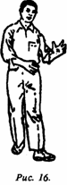
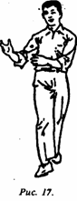

300 вопросов о цигун. Секреты китайской медицины. Содержание
Цигун в движении выполняется на основе обычной прогулки с добавлением различных способов дыхания и специальных движений ходьбы.
Движение начинается с левой ноги, внутренней частью стопы вперед; когда пятка левой ноги пересекает линию носка правой ноги, правая и левая руки одновременно вытягиваются вперед и влево, локти остаются согнутыми; левая рука вперед, ладонь обращена вверх; правая рука позади, ладонь обращена к левой руке; одновременно делается вдох. Затем делается шаг правой ногой, внутренняя сторона стопы развернута вперед; когда пятка пересекает линию носка левой ноги, обе руки одновременно поворачиваются вправо, согнутые в локтях; правая рука впереди, ладонь обращена вверх; левая рука сзади, ладонь обращена к правой руке; одновременно делается выдох. В такой последовательности выполняют 100 шагов (рис. 16, 17).

__________
Отмечен устойчивый терапевтический эффект при лечении хронических и некоторых онкологических заболеваний. Однако темп и количество шагов будут зависеть от физического состояния пациентов, вида заболевания. Например, для страдающих пороком сердца используется медленный ритм шагов и дыхания, соответственно выполняется меньшее количество шагов; для страдающих пневмозами рекомендуется более быстрый темп шагов, соответственно увеличивается и их количество; живость выполнения упражнении зависит от физического состояния.
300 вопросов о цигун. Секреты китайской медицины. Содержание